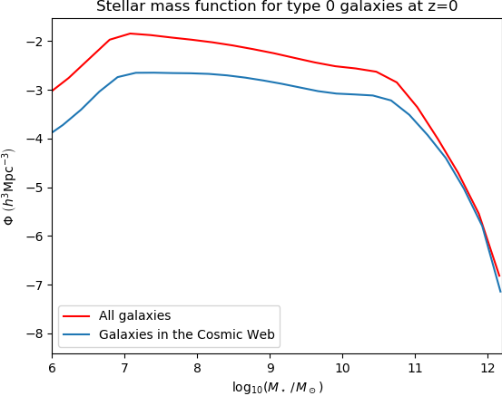
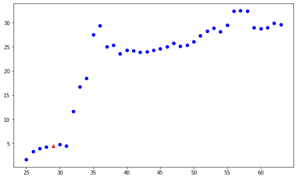
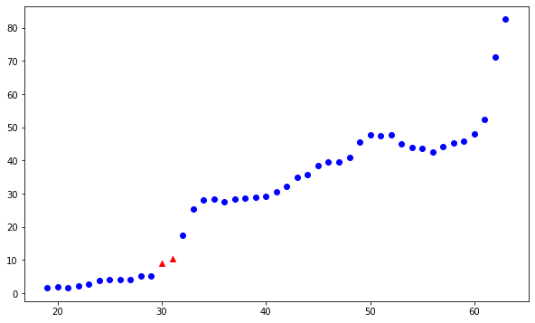
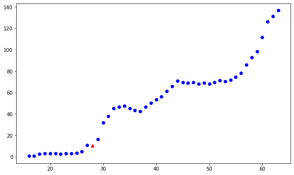
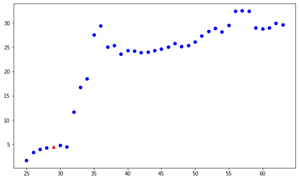
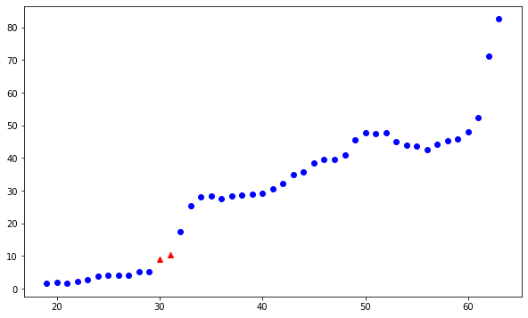
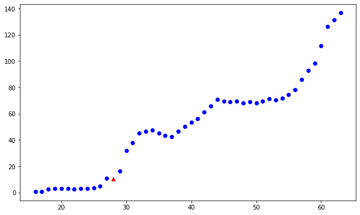

A video illustrating the 3D galaxy distribution in the Millennium Simulation at redshift 0 for galaxy stellar mass \( > 10^{9.5}M_\odot\).
A video illustrating the 3D galaxy distribution (in red) and the structure of the Cosmic Web for \(\rho_{thresh} = 5.01\left <\rho \right> \) (in black) overlaid on the Euclidean Distance Transform (EDT, in Mpc/h) distribution (in blue) in the Millennium Simulation at redshift 0 for galaxy stellar mass \( > 10^{8.5}M_\odot\). The EDT distribution is obtained for a \(1024^3\) grid and represents the minimum distance to the nearest Cosmic Web particle. For more details, see Busch & White (2020).
 




